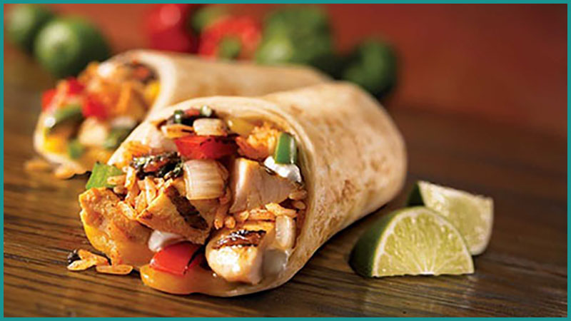
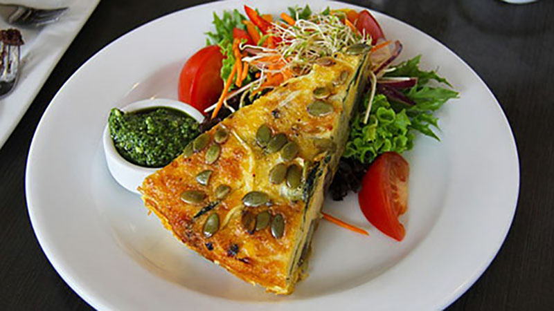
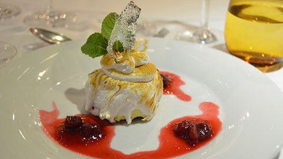
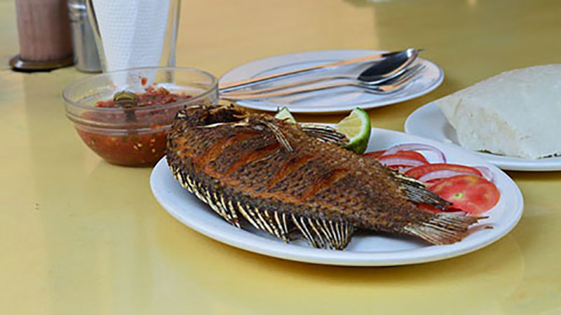
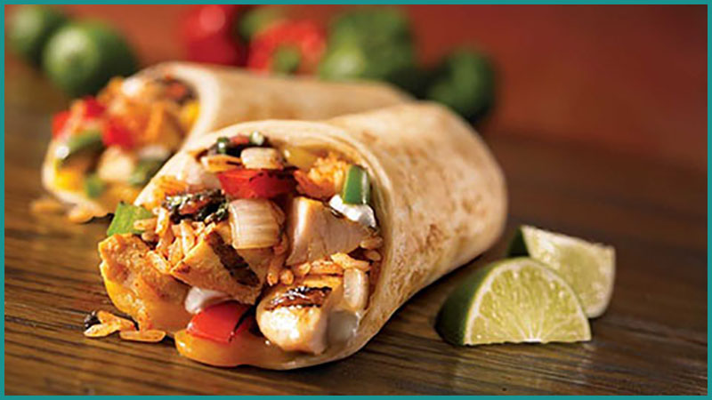
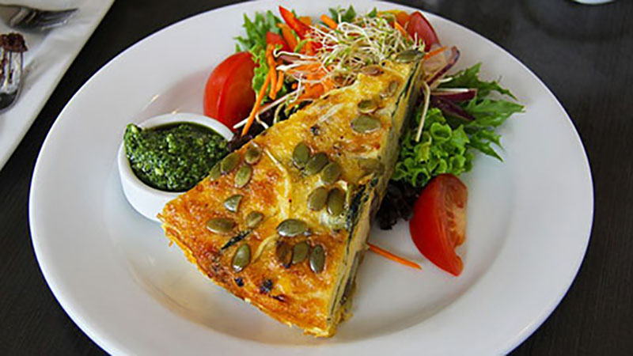
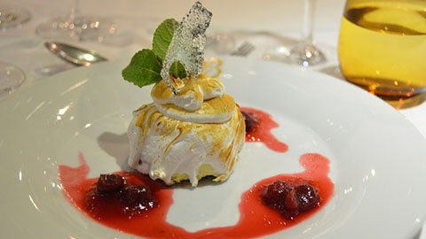
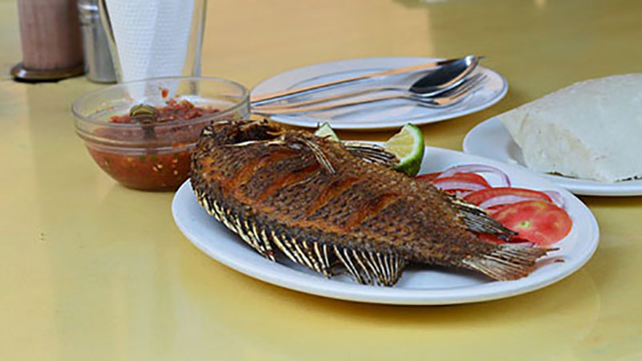

WELCOME
Two Plates© is a subscription‐based online cookbook dedicated to bringing you unique dishes to broaden your pallet. We search every country of the globe to present a full plate of mouth‐watering, culture rich foods. Each month we choose three dishes from two different countries for your enjoyment.
The two full plates we are featuring this month are from Norway and Ghana. These plates bring together the North and the South and take us back to the more robust flavors. Similar to what many of our ancestors ate.
We hope your taste buds find a new love each month.
Featured This Month
PAST PLATES
[visit our subscribe page today to gain access to all past plates]
 






